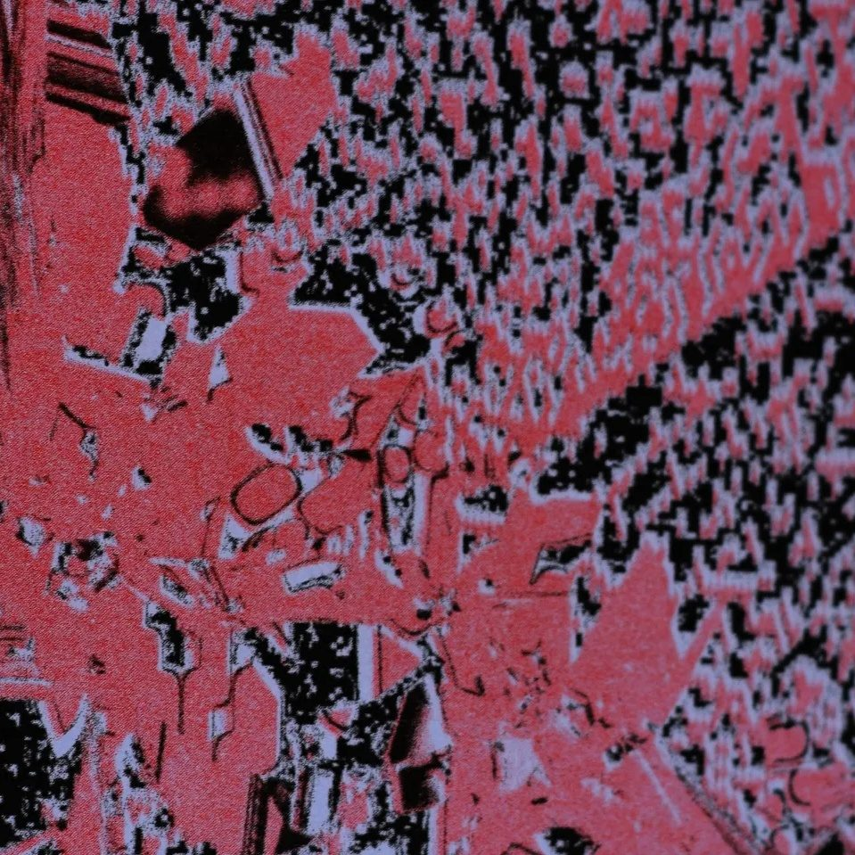

References / Editorial / 455
Garden Party, riso-printed micro-edition
A close view of a riso-printed micro-edition laid out with web-to-print tools: red-pink and black ink broken into coarse pixel dither and grain.
- Source
- Wikimedia Commons: Garden Party, close
- Creator
- Cetrl (Commons user), as uploader and author of the photograph
- Made
- 2022
- Style
- Risograph (agent-proposed, not yet reviewed by a person)
- Moods
- Experimental, grainy, digital
- Evidence
- Viewed the 959 × 959 px original on Commons, a close photograph of part of one page. A closer crop exists (Commons).
- Reviewed
- Rights
- Open license, stored. License: CC0-1.0. Rights policy


Context
The Commons description says: “Vue de près de l'impression de la micro édition Garden Party, imprimée en risographie et mise en page en web-to-print.” (Close view of the printing of the micro-edition Garden Party, printed by risograph and laid out with web-to-print.) The file is in Category:Fanzines and Category:Duplicator art.
Observed
- Two inks, a red-pink and black, cover the frame.
- The image is broken into blocky dither, like enlarged pixels, with soft grain inside each block.
- Black lies over the pink in places and leaves paper showing in others.
Why it belongs
Web-to-print layouts often reach riso through digital dithering, which links the print grain to screen pixels.
Borrow
Threshold an image with an ordered or error-diffusion dither before you print it in one ink.
Measured
Machine-extracted by tools/image-traits.py on . Full measurement.
- Mean chroma
- 0.19
- Palette
- #9b4153 25%
- #050505 12%
- #98526c 7%
- #867fa2 4%
- #797391 4%
- #928db5 3%
- #6f6680 3%
- #89485e 3%

